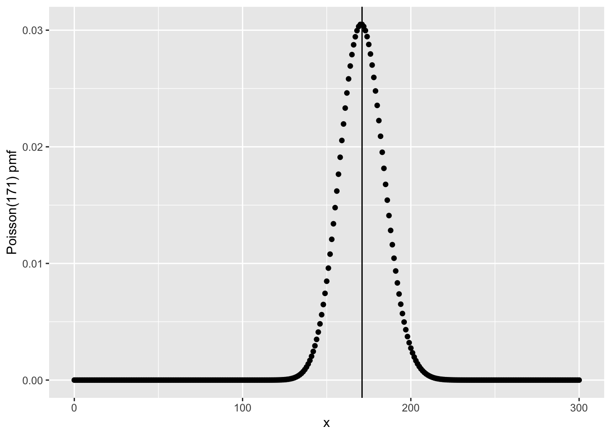

library(tidyverse)
tibble(x = 0:300) |>
mutate(p = dpois(x, 171)) |>
ggplot(aes(x, p)) +
geom_point() +
geom_vline(xintercept = 171) +
ylab('Poisson(171) pmf')
Francis J. DiTraglia
November 18, 2022
The Poisson distribution is the most famous probability model for counts, non-negative integer values. Many real-world phenomena are well approximated by this distribution, including the number of German bombs that landed in 1/4km grid squares in south London during WWII. Formally, we say that a discrete random variable \(X\) follows a Poisson distribution with rate parameter \(\mu > 0\), abbreviated \(X \sim \text{Poisson}(\mu)\), if \(X\) has support set \(\{0, 1, 2, ...\}\) and probability mass function \[ p(x) \equiv \mathbb{P}(X=x) = \frac{e^{-\mu }\mu^x}{x!}. \] Using some clever algebra with sums it’s not too hard to show that the rate parameter, \(\mu\), is both the mean and the variance of \(X\).
Now, suppose that we wanted to plot the pmf of a Poisson RV with rate \(\mu = 171\). The R function for the pmf of a Poisson RV is dpois(), so we can make our plot as follows (indicating the rate parameter as a vertical line)

For such a large value of \(\mu\), this distribution looks decidedly bell-shaped. And indeed, it turns out to be extremely well-approximated by a normal distribution, as we’ll see below. It’s also clear that \(X\) is most likely to take on a value relatively close to 171. We can use dpois() to calculate the exact probability that \(X = 171\) as follows: the answer is just over 3%.
Now let’s try to calculate exactly the same probability by hand, that is by using the formula for the Poisson pmf from above.
What gives?! The abbreviation NaN stands for “not a number.” The problem in this case is that both the numerator and denominator of the fraction inside of my_dpois() evaluate to infinity when mu and x are 171, and the ratio \(\infty/\infty\) is undefined.1
As I discussed in an earlier post, computers can only store a finite number of distinct numeric values. It’s not literally true that factorial(171) equals \(\infty\). What’s really going on here is that factorial(171) is such a large number that it can’t be stored as a floating-point number. In this case there’s a very simple fix. If you haven’t seen this trick before, it’s a helpful one to keep up your sleeves: if you run into numerical problems with very large or very small values, try taking logs.2 The log of the Poisson pmf is simply \[
\log p(x) = -\mu + x \log(\mu) - \log(x!).
\] R even has a convenient, built-in function for evaluating the natural log of a factorial: lfactorial(). Now we can compute the log of our desired probability as follows:
To obtain the probability, simply exponentiate:
Of course this just passes the buck to lfactorial(). So how does this mysterious function work? The bad news is that I’m not going to tell you; the good news is that I’m going to show you something even better, namely Stirling’s approximation: a way to understand how \(n!\) behaves qualitatively that turns out to give a pretty darned good approximation to lfactorial(). This may seem like an odd topic for a blog devoted to econometrics and statistics, so allow me to offer a few words of justification. First, computations involving \(n!\) come up all the time in applied work. Second, it can be extremely helpful for certain theoretical arguments to have good approximations to \(n!\) for large values of \(n\). Finally, and most importantly from my perspective, the heuristic argument I’ll use below relies on none other than the central limit theorem. So even if you’ve seen a more traditional proof of Stirling’s approximation, I hope you’ll enjoy this alternative approach.3
The key step in our argument is to show that the pmf of a \(\text{Poisson}(\mu)\) random variable is well-approximated by the \(\text{Normal}(\mu, \mu)\) density. This explains the bell-shaped curve that we plotted above. To obtain this result, we’ll use the central limit theorem. But there is one fact that you will need to take on faith if you don’t already know it: if \(X_1 \sim \text{Poisson}(\mu_1)\) is independent of \(X_2 \sim \text{Poisson}(\mu_2)\) then \(X_1 + X_2 \sim \text{Poisson}(\mu_1 + \mu_2)\). Proceeding by induction we can view a Poisson(171) random variable as the sum of 171 independent Poisson(1) random variables. More generally, we can view a Poisson RV with rate parameter \(n\) as the sum of \(n\) iid Poisson(1) random variables. By the central limit theorem, it follows that \[ \sqrt{n}(\bar{X}_n - 1) \rightarrow_d \text{N}(0,1) \] since the mean and variance of a Poisson(1) RV are both equal to one. From a practical perspective, this means that \(\sqrt{n}(\bar{X}_n - 1)\) is approximately equal to \(Z\), a standard normal random variable. Re-arranging, \[ X_1 + X_2 + ... + X_n = n\bar{X}_n = n + \sqrt{n} \times [\sqrt{n}(\bar{X}_n - 1)] \approx n + \sqrt{n} Z \] and \(n + \sqrt{n} Z\) is simply a \(\text{N}(n, n)\) random variable! This is a quick way of seeing why the \(\text{Poisson}(\mu)\) distribution is well-approximated by the \(\text{N}(\mu, \mu)\) distribution when \(\mu\) is large.
Now let’s run with this. As we just saw, for large \(\mu\) the Poisson\((\mu)\) pmf is well-approximated by the Normal\((\mu, \mu)\) density: \[
\frac{e^{-\mu}\mu^x}{x!} \approx \frac{1}{\sqrt{2\pi \mu}} \exp\left\{ -\frac{1}{2}\left( \frac{x - \mu}{\sqrt{\mu}}\right)^2\right\}
\] This approximation is particularly accurate for \(x\) near the mean. This is convenient, because substituting \(\mu\) for \(x\) considerably simplifies the right hand side: \[
\frac{e^{-\mu}\mu^\mu}{\mu!} \approx \frac{1}{\sqrt{2\pi\mu}}
\] Re-arranging, we obtain \[
\mu! \approx \mu^\mu e^{-\mu} \sqrt{2 \pi \mu}
\] Taking logs of both sides gives: \[
\log(\mu!) \approx \mu \log(\mu) - \mu + \frac{1}{2} \log(2 \pi \mu)
\] Writing this with \(n\) in place of \(\mu\) gives the following: \[
\log(n!) \approx n \log(n) - n + \frac{1}{2} \log(2 \pi n)
\] This is called Stirling’s Approximation. The usual way of writing this excludes the \(\log(2\pi n)/2\) term, yielding \(\log(n!) \approx n\log(n) - n\), which is fairly easy to remember. Including the extra term, however, gives increased accuracy for smaller values of \(n\). While I haven’t formally proved this, it turns out that \[
\log(n!) \sim n \log(n) - n + \frac{1}{2} \log(2 \pi n)
\] as \(n \rightarrow \infty\). In other words, the ratio of the LHS and RHS tends to one in the large \(n\) limit. Perhaps surprisingly, this approximation is extremely accurate even for fairly small values of \(n\), as we can see by comparing it against lfactorial().
| n | Stirling1 | Stirling2 | R |
|---|---|---|---|
| 1 | -1.000 | -0.081 | 0.000 |
| 2 | -0.614 | 0.652 | 0.693 |
| 3 | 0.296 | 1.764 | 1.792 |
| 4 | 1.545 | 3.157 | 3.178 |
| 5 | 3.047 | 4.771 | 4.787 |
| 6 | 4.751 | 6.565 | 6.579 |
| 7 | 6.621 | 8.513 | 8.525 |
| 8 | 8.636 | 10.594 | 10.605 |
| 9 | 10.775 | 12.793 | 12.802 |
| 10 | 13.026 | 15.096 | 15.104 |
| 11 | 15.377 | 17.495 | 17.502 |
| 12 | 17.819 | 19.980 | 19.987 |
| 13 | 20.344 | 22.546 | 22.552 |
| 14 | 22.947 | 25.185 | 25.191 |
| 15 | 25.621 | 27.894 | 27.899 |
| 16 | 28.361 | 30.667 | 30.672 |
| 17 | 31.165 | 33.500 | 33.505 |
| 18 | 34.027 | 36.391 | 36.395 |
| 19 | 36.944 | 39.335 | 39.340 |
| 20 | 39.915 | 42.331 | 42.336 |
I have a bad habit of trying to add a “moral” or “lesson” to the end of my posts, but I suppose there’s no point trying to break the habit today! While there are easier ways to derive Stirling’s approximation, there are two things I enjoy about this one. First, we get a more accurate approximation than \(n \log(n) - n\) with practically no effort. Second, making unexpected connections between facts that we already know both deepens our understanding and helps us “compress” information. If you ever forget Stirling’s approximation, now you know how to very quickly re-derive it on the spot!
There’s an important but subtle difference between NA and NaN. The former is synonymous with “missing.” If x equals NA this means “we don’t know the value of x.” If instead x equals NaN, this means “x isn’t missing, but it’s not a well-defined numeric value either.”↩︎
Unless otherwise specified log always means “natural logarithm” on this blog :)↩︎
I first came across this argument from the late David MacKay’s fantastic book Information Theory, Inference, and Learning Algorithms. His book on sustainable energy, while a bit out-of-date at this point, is also spectacularly good.↩︎